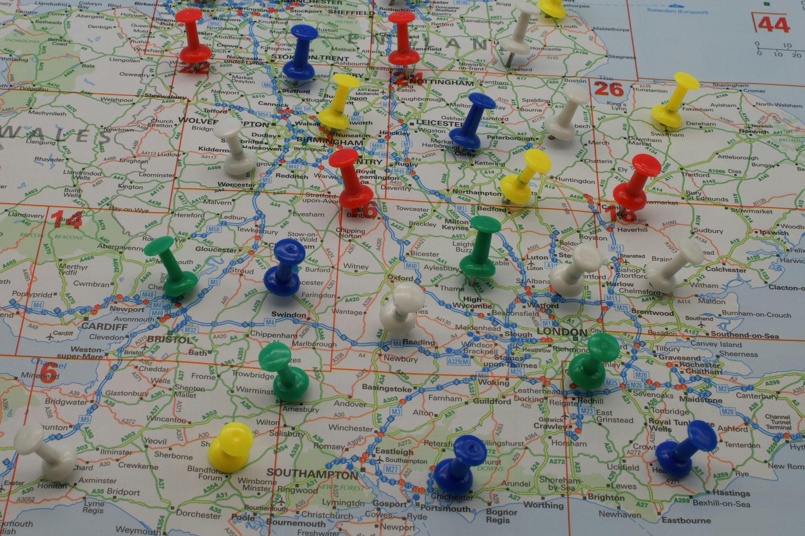

Explora los destinos más populares de 2025
En Expo Vacaciones 2025 encontrarás los lugares más fascinantes para tu próxima escapada. Desde las cálidas playas del Caribe hasta las ciudades europeas llenas de historia, tenemos el destino perfecto para cada tipo de viajero.
Top 5 destinos recomendados
| Destino | País | Tipo de viaje | Temporada ideal |
|---|---|---|---|
| Kyoto | Japón | Cultural y gastronómico | Primavera |
| Reykjavik | Islandia | Aventura y naturaleza | Invierno |
| Lisboa | Portugal | Escapada urbana | Todo el año |
| Bali | Indonesia | Relax y playas | Verano |
| Patagonia | Argentina/Chile | Exploración y naturaleza | Otoño |
Consejos para elegir tu próximo destino
- Considera el clima y la temporada alta del país que visites.
- Investiga sobre costumbres locales y eventos culturales.
- Compara precios y opciones de alojamiento con antelación.
- Opta por experiencias sostenibles y de bajo impacto ambiental.
No importa si buscas aventura, descanso o cultura: en Expo Vacaciones 2025 podrás descubrir destinos únicos con las mejores ofertas. ¡Prepara tus maletas y déjate inspirar!